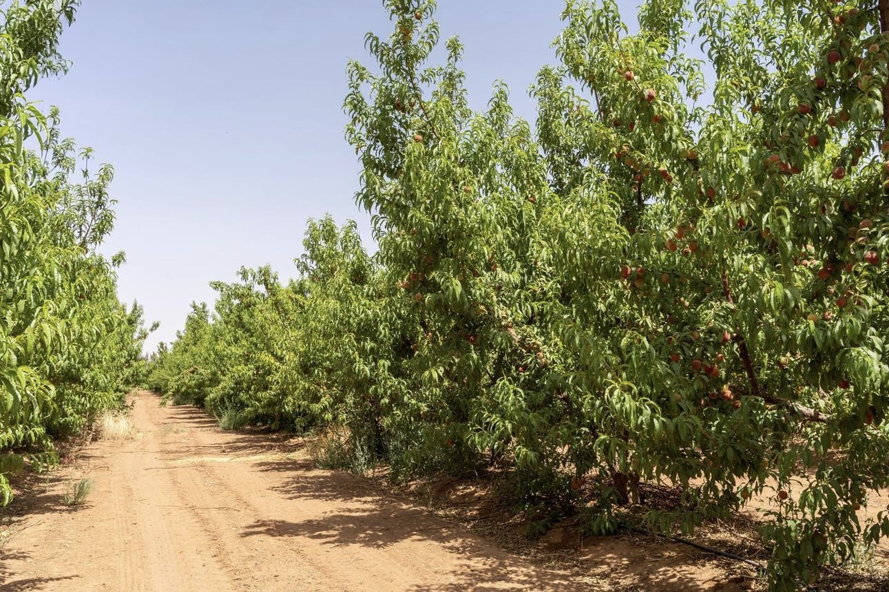

محمية الحرة:

تُعد من أهم المحميات الطبيعية في المملكة، حيث تحتضن تنوعاً بيئياً وفطرياً فريداً وسط تكوينات بركانية وسهول واسعة تروي جمال الطبيعة البكر.
واحة زراعية خصبة في غرب الجوف وسلة غذاء المنطقة؛ تشتهر بوفرة خيراتها من المحاصيل وجمال طبيعتها البكر.
تُعد من أهم المحميات الطبيعية في المملكة، حيث تحتضن تنوعاً بيئياً وفطرياً فريداً وسط تكوينات بركانية وسهول واسعة تروي جمال الطبيعة البكر.

تمتد في طبرجل مساحات زراعية شاسعة جعلت منها سلة غذائية بارزة في المنطقة، وتشتهر بإنتاج أجود التمور وعلى رأسها تمرة «حلوة الجوف» الشهيرة التي تُعد رمزاً للضيافة الشمالية، إلى جانب بساتين الزيتون والفواكه.

وجهات طبيعية هادئة يقصدها الزوار للاستمتاع بالأجواء المعتدلة وجمال الطبيعة الصحراوية خاصة في مواسم الربيع.